Chapter 6
Fundamental Considerations of Categories
This chapter focuses mainly on limits and colimits in a given category
This chapter is in some sense parallel to Chapter 3, Fundamental Considerations in Set. When attention is restricted to
the behavior of categories is predictable: the rules for categories are well aligned with those of sets, which are well aligned with those of natural numbers.
6.1 Limits and colimits
Limits and colimits are universal constructions, meaning they represent certain ideals of behavior in a category. When it comes to sets that map to A and B, the A × B grid is ideal—it projects on to both A and B as straightforwardly as possible. When it comes to sets that can interpret the elements of both A and B, the disjoint union A⊔B is ideal—it includes both A and B without confusion or superfluity. These are limits and colimits in Set. Limits and colimits exist in other categories as well.
Limits in a preorder are meets; colimits in a preorder are joins. Limits and colimits also exist for database instances and monoid actions, allowing us to discuss, for example, the product or union of different finite state machines. Limits and colimits exist for topological spaces, giving rise to products and unions as well as to quotients.
Limits and colimits do not exist in every category. However, when
6.1.1 Products and coproducts in a category
Section 3.1 discussed products and coproducts in the category Set of sets. Now we discuss the same notions in an arbitrary category. For both products and coproducts, we begin with examples and then write the general concept.
6.1.1.1 Products
The product of two sets is a grid, which projects down onto each of the two sets. This is a good intuition for products in general.
Example 6.1.1.2. Given two preorders,
Note that the projection functions X1 × X2 → X1 and X1 × X2 → X2 induce morphisms of preorders. That is, if
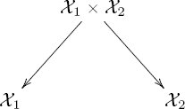
Exercise 6.1.1.3.
Suppose you have a partial order
Exercise 6.1.1.4.
Consider the partial order ⩽ on ℕ given by standard less-than-or-equal-to, so 5 ⩽ 9, and let divides be the partial order from Example 4.4.3.2, where 6 divides 12. If we call the product order (X, ≤) ≔ (ℕ, ⩽) × (ℕ, divides), which of the following are true?
Example 6.1.1.5. Given two graphs G1 = (V1, A1, src1, tgt1) and G2 = (V2, A2, src2, tgt2), we can take their product and get a new graph G1 × G2. The vertices are the grid of vertices V1 × V2, so each vertex in G1 × G2 is labeled by a pair of vertices, one from G1 and one from G2. When should an arrow connect (v1, v2) to
Let’s write G ≔ G1 × G2 and say, G = (V, A, src, tgt). We said that V = V1 × V2 and A = A1 × A2. What should the source and target functions A → V be? Given a function src1 : A1 → V1 and a function src2 : A2 → V2, the universal property for products in Set (Proposition 3.1.1.10 or, better, Example 3.1.1.15) provides a unique function
Namely, the source of arrow (a1, a2) will be the vertex (src1(a1), src2(a2)). Similarly, we have a ready-made choice of target function tgt = tgt1 × tgt2. We have now defined the product graph,
Here is a concrete example. Let I and J be drawn as follows:
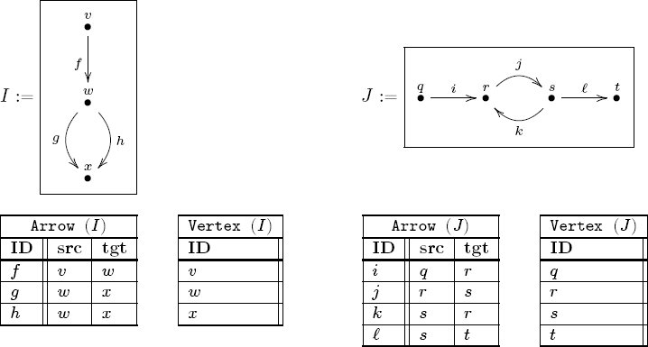
The product I × J has, as expected, 3 * 4 = 12 vertices and 3 * 4 = 12 arrows:
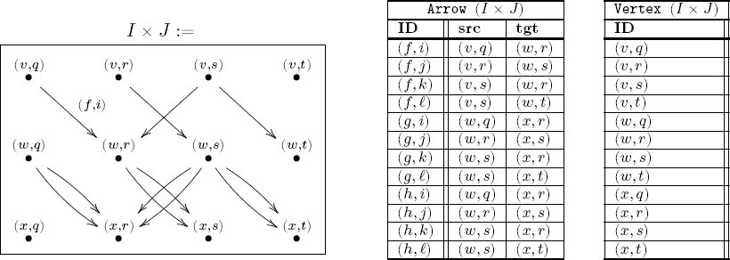
Here is the most important thing to notice. Look at the Arrow table for I × J, and for each ordered pair, look only at the first entry in all three columns; you will see something that matches with the Arrow table for I. For example, in the I × J table, the first row’s first entries are f, v, w. Then do the same for the second entry in each column, and again you will see a match with the Arrow table for J. These matches are readily visible graph homomorphisms I × J → I and I × J → J in Grph.
Exercise 6.1.1.6.
Let [1] denote the linear order graph of length 1,
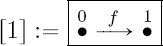
and let P = Paths([1]) be its paths-graph, as in Example 5.1.2.25 (so P should have three arrows and two vertices). Draw the graph P × P.
Exercise 6.1.1.7.
Recall from Example 4.5.2.10 that a discrete dynamical system (DDS) is a set s together with a function f : s → s. It is clear that if
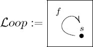
is the loop schema, then a DDS is simply an instance (a functor) I :
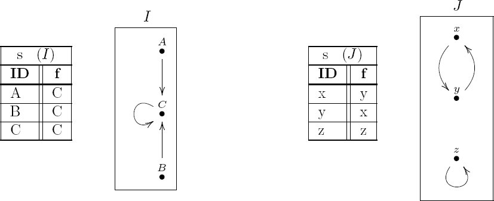
a. Make a guess and tabulate I × J. Then draw it.2
b. Recall the notion of natural transformations between functors (see Example 5.3.3.5), which in the case of functors
In each case what is most important to recognize is that there are projection maps I × J → I and I × J → J, and that the construction of I × J seems as straightforward as possible, subject to having these projections.
Definition 6.1.1.8. Let
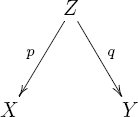
A product of X and Y is a span
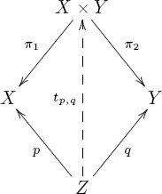
We often denote the morphism tp,q by 〈p, q〉: Z → X × Y .
Remark 6.1.1.9. Definition 6.1.1.8 endows the product of two objects with a universal property. It says that a product of two objects X and Y maps to those two objects and serves as a gateway for all that do the same. “None shall map to X and Y except through me!” This grandiose property is held by products in all the various categories discussed so far. It is what is meant by “X × Y maps to both X and Y and does so as straightforwardly as possible.” The grid of dots obtained as the product of two sets has such a property (see Example 3.1.1.11).
Example 6.1.1.10. Example 6.1.1.2 discussed products of preorders. This example discusses products in an individual preorder. That is, by Proposition 5.2.1.13, there is a functor PrO → Cat that realizes each individual preorder as a category. If
Example 6.1.1.11. Note that the product of two objects in a category
Consider the set ℝ2, and say that (x1, y1) ≤ (x2, y2) if there exists ℓ ≥ 1 such that x1ℓ = x2 and y1ℓ = y2; in other words, point p is less than point q if, in order to travel from q to the origin along a straight line, one must pass through p along the way.4 We have given a perfectly good partial order, but p ≔ (1, 0) and q ≔ (0, 1) do not have a product. Indeed, it would have to be a nonzero point that was on the same line through the origin as p and the same line through the origin as q, of which there are none.
Example 6.1.1.12. Note that there can be more than one product of two objects in a category
Consider the set ℝ2, and say that (x1, y1) ≤ (x2, y2) if
For any two points p, q, there will be lots of points that serve as products p × q: any point a on the smaller of their two orbit circles will suffice. Given any two points a, a′ on this smaller circle, we have a unique isomorphism a ≅ a′ because a ≤ a′ and a′ ≤ a.
Exercise 6.1.1.13.
Consider the preorder
a. For each of the following pairs, what is their product in
b. How would these answers differ if
Exercise 6.1.1.14.
Let X be a set, and consider it as a discrete category. Given two objects x, y ∈ Ob(X), under what conditions will there exist a product x × y in X?
Exercise 6.1.1.15.
Let f : ℝ → ℝ be a function like one that you would see in grade school (e.g., f(x) = x+7). A typical thing to do is to graph f as a curve running through the plane ℝ2 ≔ ℝ×ℝ. For example, f is graphed as a straight line with slope 1 and y-intercept 7. In general, the graph of f is a curve that be understood as a function F : ℝ → ℝ2.
a. For an arbitrary function f : ℝ → ℝ with graph F : ℝ → ℝ2 and an arbitrary r ∈ ℝ, what are the (x, y) coordinates of F (r) ∈ ℝ2?
b. Obtain F : ℝ → ℝ2 using the universal property given in Definition 6.1.1.8.
Exercise 6.1.1.16.
Consider the preorder (ℕ, divides), discussed in Example 4.4.3.2, where, e.g., 5 ≤ 15, but 5 ≰ 6. Consider it as a category, using the functor PrO → Cat.
a. What is the product of 9 and 12 in this category?
b. Is there a standard name for products in this category?
Example 6.1.1.17. Products do not have to exist in an arbitrary category, but they do exist in Cat, the category of categories. That is, given two categories
The composition formula is clear.
Let [1] ∈ Ob(Cat) denote the linear order category of length 1:
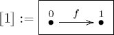
As a schema it has one arrow, but as a category it has three morphisms. So we expect [1]×[1] to have nine morphisms, and that is true. In fact, [1]×[1] looks like a commutative square:
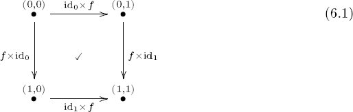
We see only four morphisms here, but there are also four identities and one morphism (0, 0) → (1, 1) given by composition of either direction. It is a minor miracle that the categorical product somehow “knows” that this square should commute; however, this is not a mere preference but follows rigorously from the definitions we already gave of Cat and products.
6.1.1.18 Coproducts
The coproduct of two sets is their disjoint union, which includes nonoverlapping copies of each of the two sets. This is a good intuition for coproducts in general.
Example 6.1.1.19. Given two preorders,
Given an element x ∈ X1 ⊔ X2 and an element x′ ∈ X1 ⊔ X2, how can we use ≤1 and ≤2 to compare x1 and x2? The relation ≤1 only knows how to compare elements of X1, and the relation ≤2 only knows how to compare elements of X2. But x and x′ may come from different homes, e.g., x ∈ X1 and x′ ∈ X2, in which case neither ≤1 nor ≤2 gives any clue about which should be bigger.
So when should we say that x ≤1⊔2 x′ holds? The obvious guess is to say that x is less than x′ iff both x and x′ are from the same home and the local ordering has x ≤ x′. To be precise, we say x ≤1⊔2 x′ if and only if either one of the following conditions hold:
- x ∈ X1 and x′ ∈ X1 and x ≤1 x′, or
- x ∈ X2 and x′ ∈ X2 and x ≤2 x′.
With ≤1⊔2 so defined, one checks that it is not only a preorder but that it serves as a coproduct of
Note that the inclusion functions X1 → X1 ⊔ X2 and X2 → X1 ⊔ X2 induce morphisms of preorders. That is, if x, x′ ∈ X1 are elements such that x ≤1 x′ in
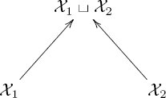
Exercise 6.1.1.20.
Suppose you have a partial order
Example 6.1.1.21. Given two graphs G1 = (V1, A1, src1, tgt1) and G2 = (V2, A2, src2, tgt2), we can take their coproduct and get a new graph G1⊔G2. The vertices will be the disjoint union of vertices V1 ⊔ V2, so each vertex in G1 ⊔ G2 is labeled either by a vertex in G1 or by one in G2 (if any labels are shared, then something must be done to differentiate them). When should an arrow connect v to v′? Whenever both are from the same component (i.e., either v, v′ ∈ V1 or v, v′ ∈ V2) and we can find an arrow connecting them in that component. It turns out there is a simple formula for the set of arrows in G1 ⊔ G2, namely, A1 ⊔ A2.
Let’s write G ≔ G1 ⊔ G2 and say, G = (V, A, src, tgt). We now know that V = V1 ⊔ V2 and A = A1 ⊔ A2. What should the source and target functions A → V be? Given a function src1 : A1 → V1 and a function src2 : A2 → V2, the universal property for coproducts in Set can be used to specify a unique function
Namely, for any arrow a ∈ A, we know either a ∈ A1 or a ∈ A2 (and not both), so the source of a will be the vertex src1(a) if a ∈ A1 and src2(a) if a ∈ A2. Similarly, we have a ready-made choice of target function tgt = tgt1 ⊔ tgt2. We have now defined the coproduct graph.
Here is an example. Let I and J be as in Example 5.3.3.5:
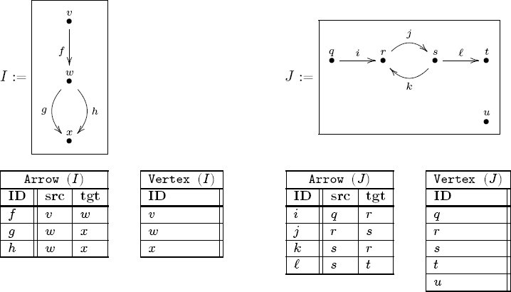
The coproduct I ⊔ J has, as expected, 3 + 5 = 8 vertices and 3 + 4 = 7 arrows:

Here is the most important thing to notice. Look at the Arrow tables and notice that there is a way to send each row in I to a row in I ⊔ J such that all the foreign keys match, and similarly for J. This also works for the vertex tables. These matches are readily visible graph homomorphisms I → I ⊔ J and J → I ⊔ J in Grph.
Exercise 6.1.1.22.
Recall from Example 4.5.2.10 that a discrete dynamical system (DDS) is a set s together with a function f : s → s; if
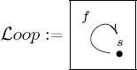
is the loop schema, then a DDS is simply an instance (a functor) I :
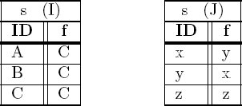
Make a guess and tabulate I ⊔ J. Then draw it.
In each case (preorders, graphs, DDSs), what is most important to recognize is that there are inclusion maps I → I ⊔ J and J → I ⊔ J, and that the construction of I ⊔ J seems as straightforward as possible, subject to having these inclusions.
Definition 6.1.1.23. Let
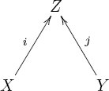
A coproduct of X and Y is a cospan
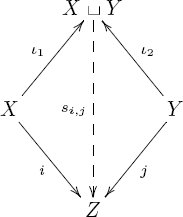
The morphism si,j is often denoted
Remark 6.1.1.24. Definition 6.1.1.8 endows the coproduct of two objects with a universal property. It says that a coproduct of two objects X and Y receives maps from those two objects, and serves as a gateway for all that do the same. “None shall receive maps from X and Y except through me!” This grandiose property is held by all the coproducts discussed so far. It is what is meant by “X ⊔ Y receives maps from both X and Y and does so as straightforwardly as possible.” The disjoint union of dots obtained as the coproduct of two sets has such a property (see Example 3.1.2.5).
Example 6.1.1.25. By Proposition 5.2.1.13, there is a functor PrO → Cat that realizes every preorder as a category. If
Just as for products, the coproduct of two objects in a category
Example 6.1.1.26. Consider the set ℝ2 and partial order from Example 6.1.1.11, where (x1, y1) ≤ (x2, y2) if there exists ℓ ≥ 1 such that x1ℓ = x2 and y1ℓ = y2. Again the points p ≔ (1, 0) and q ≔ (0, 1) do not have a coproduct. Indeed, it would have to be a nonzero point that was on the same line through the origin as p and the same line through the origin as q, of which there are none.
Exercise 6.1.1.27.
Consider the preorder
a. For each of the following pairs, what is their coproduct in
b. How would these answers differ if
Exercise 6.1.1.28.
Let X be a set, and consider it as a discrete category. Given two objects x, y ∈ Ob(X), under what conditions will there exist a coproduct x ⊔ y?
Exercise 6.1.1.29.
Consider the preorder (ℕ, divides), discussed in Example 4.4.3.2, where, e.g., 5 ≤ 15, but 5 ≰ 6.
a. What is the coproduct of 9 and 12 in that category?
b. Is there a standard name for coproducts in that category?
6.1.2 Diagrams in a category
Diagrams have illustrated the text throughout the book. What is the mathematical foundation of these illustrations? The answer is functors.
Definition 6.1.2.1 (Diagrams). Let
Here are some rules for drawing diagrams as in Definition 6.1.2.1.
Rules of good practice 6.1.2.2. Suppose given an indexing category I and an I-shaped diagram
(i) For each object in q ∈ I, draw a dot labeled by X(q); if several objects in I point to the same object in
(ii) For each morphism f : q → q′ in I, draw an arrow between dots X(q) and X(q′), and label it X(f) in
(iii) One can abridge this process by not drawing every morphism in I, as long as every morphism in I is represented by a unique path in
(iv) One may choose to draw a dash box around the finished diagram X to indicate that it is referencing an ambient category
Example 6.1.2.3. Consider the commutative diagram in Set:
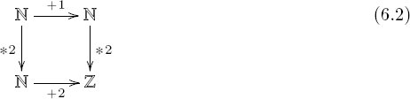
This is the drawing of a functor d : [1] × [1] → Set (see Example 6.1.1.17). With notation for the objects and morphisms of [1] × [1], as shown in diagram (6.1), we have d(0, 0) = d(0, 1) = d(1, 0) = ℕ and d(1, 1) = ℤ (for some reason) and d(id0, f): ℕ → ℕ given by n ↦ n + 1, and so on. The fact that d is a functor means it must respect composition formulas, which implies that diagram (6.2) commutes. We call [1] × [1] the commutative square indexing category. 8
Example 6.1.2.4. Recall from Section 2.2 that not all diagrams commute; one must specify that a given diagram commutes if one wishes to communicate this fact. But then, how is a noncommuting diagram to be understood as a functor?
Let G ∈ Ob(Grph) denote the following graph:
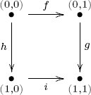
Recall the free category functor F : Grph → Cat (see Example 5.1.2.33). The free category F (G) ∈ Ob(Cat) on G looks almost like [1]×[1] in Example 6.1.2.3 except that since (0,0)[f, g] is a different path in G than is (0,0)[h, i], they become different morphisms in F(G). A functor F(G) → Set might be drawn the same way that (6.2) is, but it would be a diagram that would not be said to commute.
Exercise 6.1.2.5.
Consider [2], the linear order category of length 2.
a. Is [2] the appropriate indexing category for commutative triangles?
b. If not, what is? If so, what might lead someone to be skeptical, and why would the skeptic be wrong?
Example 6.1.2.6. Recall that an equalizer in Set is a diagram of sets that looks like this:
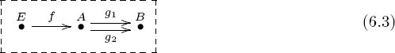
where g1 ○ f = g2 ○ f. What is the indexing category for such a diagram? It is the schema (6.3) with the PED E[f, g1] ≃ E[f, g2]. That is, in some sense one sees the indexing category, but the PED needs to be declared.
Exercise 6.1.2.7.
Let
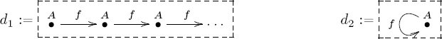
a. Should these two diagrams have the same indexing category?
b. Write the indexing category for both.
c. If they have the same indexing category, what is causing or allowing the pictures to appear different?
d. If they do not have the same indexing category, what coincidence makes the two pictures have so much in common?
Definition 6.1.2.8. Let I ∈ Ob(Cat) be a category. The left cone on I, denoted I◅, is the category defined as follows. On objects we put Ob(I◅) = {LCI} ⊔ Ob(I), and we call the new object LCI the cone point of I◅. On morphisms we add a single new morphism sb : LCI → b for every object b ∈ Ob(I); more precisely,
The composition formula is in some sense obvious. To compose two morphisms both in I, compose as dictated by I; if one has LCI as source, then there will be a unique choice of composite.
There is an obvious inclusion of categories,
Remark 6.1.2.9. Note that the specification of I◅ given in Definition 6.1.2.8 works just as well if I is considered a schema and we are constructing a schema I◅: add the new object LCI and the new arrows sb : LCI → b for each b ∈ Ob(I), and for every morphism f : b → b′ in I, add a PED
Example 6.1.2.10. For a natural number n ∈ ℕ, define the n-leaf star schema, denoted Starn, to be the category (or schema; see Remark 6.1.2.9) n◅, where n is the discrete category on n objects. The following illustrate the categories Star0, Star1, Star2, and Star3:
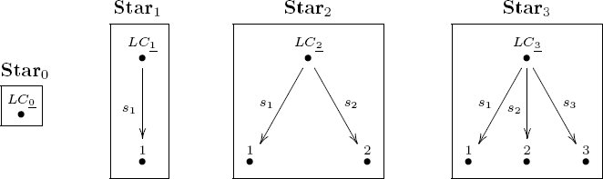
Exercise 6.1.2.11.
Let
Exercise 6.1.2.12.
Let
Solution 6.1.2.12.
They are the same,
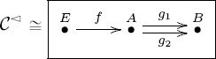
where the latter is understood to include the PED E[f, g1] = E[f, g2].
Definition 6.1.2.13. Let I ∈ Ob(Cat) be a category. The right cone on I, denoted I▻, is the category defined as follows. On objects we put Ob(I▻) = Ob(I) ⊔ {RCI}, and we call the new object RCI the cone point of I▻. On morphisms we add a single new morphism tb : b → RCI for every object b ∈ Ob(I); more precisely,
The composition formula is in some sense obvious. To compose two morphisms both in I, compose as dictated by I; if one has RCI as target, then there will be a unique choice of composite.
There is an obvious inclusion of categories I → I▻.
Exercise 6.1.2.14.
Let
Exercise 6.1.2.15.
Let I = 2, let
a. Using Rules 6.1.2.2, draw an object d ∈ Ob(D).
b. How might you draw a morphism f : d → d′ in D?
Solution 6.1.2.15.
a. We have I◅ = Star2, as in Example 6.1.2.10. We can draw an object
b. We could draw f : d → d′ as
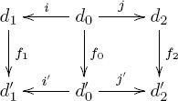
6.1.3 Limits and colimits in a category
Let
6.1.3.1 Universal objects
Definition 6.1.3.2. Let
Example 6.1.3.3. For any category I, the left cone I◅ has a unique initial object, and the right cone I▻ has a unique terminal object; in both cases it is the cone point. See Definitions 6.1.2.8 and 6.1.2.13.
Example 6.1.3.4. The initial object in Set is the set a for which there is always one way to map from a to anything else. Given c ∈ Ob(Set), there is exactly one function Ø → c, because there are no choices to be made, so the empty set Ø is the initial object in Set.
The terminal object in Set is the set z for which there is always one way to map to z from anything else. Given c ∈ Ob(Set), there is exactly one function c → {☺}, where {☺} is any set with one element, because there are no choices to be made: everything in c must be sent to the single element in {☺}. There are lots of terminal objects in Set, and they are all isomorphic to 1.
Example 6.1.3.5. The initial object in Grph is the graph a for which there is always one way to map from a to anything else. Given c ∈ Ob(Grph), there is exactly one graph homomorphism Ø → c, where Ø ∈ Ob(Grph) is the empty graph; so Ø is the initial object.
The terminal object in Grph is more interesting. It is
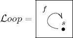
the graph with one vertex and one arrow. In fact, there are infinitely many terminal objects in Grph, but all of them are isomorphic to
Exercise 6.1.3.6.
Let X be a set, let ℙ(X) be the set of subsets of X (see Definition 3.4.4.9). We can regard ℙ(X) as a preorder under inclusion of subsets (see, for example, Section 4.4.2). And we can regard preorders as categories using a functor PrO → Cat (see Proposition 5.2.1.13).
a. What is the initial object in ℙ(X)?
b. What is the terminal object in ℙ(X)?
Example 6.1.3.7. The initial object in the category Mon of monoids is the trivial monoid, 1. Indeed, for any monoid M, a morphism of monoids 1 → M is a functor between one-object categories and these are determined by where they send morphisms. Since 1 has only the identity morphism and functors must preserve identities, there is no choice involved in finding a monoid morphism 1 → M.
Similarly, the terminal object in Mon is also the trivial monoid, 1. For any monoid M, a morphism of monoids M → 1 sends everything to the identity; there is no choice.
Exercise 6.1.3.8.
a. What is the initial object in Grp, the category of groups?
b. What is the terminal object in Grp?
Example 6.1.3.9. Recall the preorder Prop of logical propositions from Section 5.2.4.1. The initial object is a proposition that implies all others. It turns out that “FALSE” is such a proposition. The proposition “FALSE” is like “1 ≠ 1”; in logical formalism it can be shown that if “FALSE” is true, then everything is true.
The terminal object in Prop is a proposition that is implied by all others. It turns out that “TRUE” is such a proposition. In logical formalism, everything implies that “TRUE” is true.
Example 6.1.3.10. The discrete category 2 has no initial object and no terminal object. The reason is that it has two objects 1, 2, but no maps from one to the other, so Hom2(1, 2) = Hom2(2, 1) = Ø.
Exercise 6.1.3.11.
Recall the divides preorder (see Example 4.4.3.2), where 5 divides 15.
a. Considering this preorder as a category, does it have an initial object?
b. Does it have a terminal object?
Exercise 6.1.3.12.
Let
a. Does
b. Does
c. Which monoids
Exercise 6.1.3.13.
Let S be a set, and consider the indiscrete category KS ∈ Ob(Cat) on objects S (see Example 5.3.4.3).
a. For what S does KS have an initial object?
b. For what S does KS have a terminal object?
An object in a category is sometimes called universal if it is either initial or terminal, but we rarely use that term in practice, preferring to be specific about whether the object is initial or terminal. The word final is synonymous with the word terminal, but we will use the latter.
Universal properties refer to either initial or terminal objects in a specially-designed category. Colimits end up having an initial sort of universal property, and limits end up having a terminal sort of universal property. See Section 6.1.3.16.
Warning 6.1.3.14. A category
In fact, Proposition 6.1.3.15 shows that in any category
As a result, we often speak of the initial object in
This book uses either the definite or the indefinite article, as is convenient, when speaking about initial or terminal objects. For example, Example 6.1.3.4 discussed the initial object in Set and the terminal object in Set. This usage is common throughout mathematical literature.
Proposition 6.1.3.15. Let
Proof. Suppose a1 and a2 are initial. Since a1 is initial, there is a unique morphism f : a1 → a2; there is also a unique morphism a1 → a1, which must be ida1. Since a2 is initial, there is a unique morphism g : a2 → a1; there is also a unique morphism a2 → a2, which must be ida2. So g ○ f = ida1 and f ○ g = ida2, which means that f is the desired (unique) isomorphism.
The proof for terminal objects is appropriately dual.
6.1.3.16 Examples of limits
We are moving toward defining limits and colimits in full generality. We have assembled most of the pieces we will need: indexing categories, their left and right cones, and the notion of initial and terminal objects. Relying on the now familiar notion of products, we put these pieces in place and motivate one more construction, the slice category over a diagram.
Let
Construction 6.1.3.17 (Products). Let
Given a functor
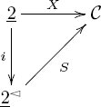
We are ready to define the category of {X1, X2} spans.
Define the category of X spans in
The product of X1 and X2 was defined in Definition 6.1.1.8; we can now recast X1 × X2 as the terminal object in
An object in
In other words, the objects of
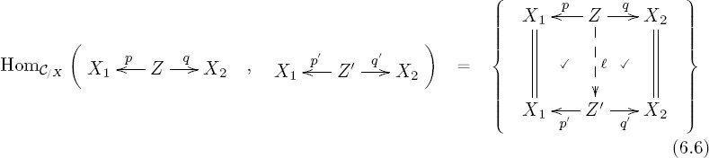
Each object in
It may be strange to have a category in which the objects are spans in another category. But once one admits this possibility, the notion of morphism between spans becomes totally sensible.
Example 6.1.3.18. Consider the following arbitrary six-object category
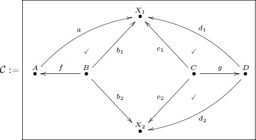
Let
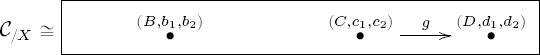
6.1.3.19 Definition of limit
A product of two objects X, Y ∈ Ob() is a special case of a limit, namely, one in which the indexing category is 2. To handle arbitrary limits, we replace 2 with an arbitrary indexing category I, and use the following definition to generalize the category of spans, defined in (6.5).
Definition 6.1.3.20. Let
A limit of X, denoted limI X or lim X, is a terminal object in
Remark 6.1.3.21. Perhaps the following diagram will be helpful for understanding limits. Given a functor
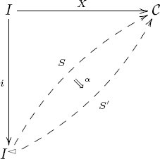
The limit of X is the initial object in this category.
Pullbacks The relevant indexing category for pullbacks is the cospan, I = 2▻, drawn as on the left:
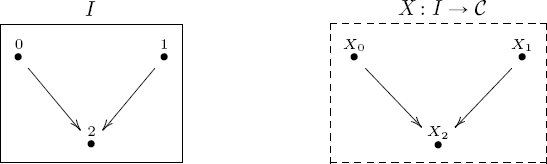
A I-shaped diagram in
An object S in the slice category
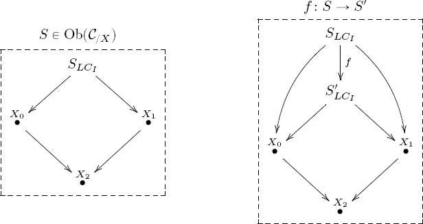
A morphism in
Remark 6.1.3.22. Let
For example, if I = 2 then a functor
Exercise 6.1.3.23.
Let GrIn be the graph-indexing category (see (5.8)).
a. What is GrIn◅?
b. Let G : GrIn → Set be the graph from Example 4.3.1.2. Give an example of an object in Set/G.
Exercise 6.1.3.24.
Let
a. What is the slice category
b. What is a limit of X?
Solution 6.1.3.24.
a. The left cone of 0 is the terminal category 0◅ = 1, and since every diagram
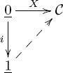
commutes, we have an isomorphism
b. A limit of X is defined to be a terminal object in
Example 6.1.3.25. In the course of doing math, random-looking diagrams sometimes come up, for which one wants to take the limit. We have now constructed the limit for any shape diagram. For example, if we wanted to take the product of more than two, say, n, objects, we could use the diagram shape I = n. A functor X : n → Set is n sets X1, X2, … , Xn, and their limit is a functor lim X : n◅ → Set,
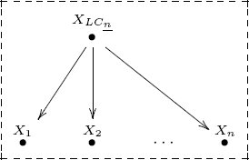
which, of course, is the product,
Example 6.1.3.26. We have now defined limits in any category, so we have defined limits in Cat. Let [1] denote the category depicted
and let
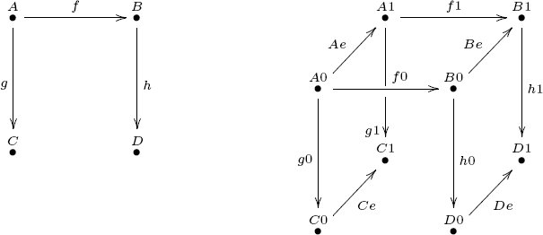
It turns out that a natural transformation α : F → G between functors
Exercise 6.1.3.27.
Recall that Section 3.4.6.5 described relative sets. In fact, Definition 3.4.6.6 basically defines a category of relative sets over any fixed set B. Let B : 1 → Set be the functor representing the object B ∈ Ob(Set).
a. What is the relationship between the slice category Set/B, as defined in Definition 6.1.3.20, and the category of relative sets over B?
b. What is the limit of the functor B : 1 → Set?
Theorem 6.1.3.28. Let I be a category and let F : I → Set be a functor. Then its limit set limI F ∈ Ob(Set) exists and one can find its elements as follows. An element of the set limI F is given by choosing an element of xi ∈ F (i) for each object i ∈ Ob(I) such that, for each f : i → i′ one has F(f)(xi) = xi′.
Proof. See [29].
Exercise 6.1.3.29.
Let I be the category given by the following schema:
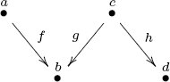
Let X : I → Set be given on objects by X(a) ≔ 2, X(b) ≔ 1, X(c) ≔ 3, X(d) = 2, and given (in sequence notation) on morphisms by X(f) = (1, 1), X(g) = (1, 1, 1), X(h) = (1, 2, 1). What is the limit limI X.
6.1.3.30 Definition of colimit
The definition of colimits is appropriately dual to the definition of limits. Instead of looking at left cones, we look at right cones; instead of being interested in terminal objects, we are interested in initial objects.
Definition 6.1.3.31. Let
A colimit of X, denoted colimI X or colim X, is an initial object in
Remark 6.1.3.32. Perhaps the following diagram will be helpful for understanding colimits. Given a functor
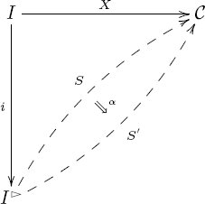
The colimit of X is the initial object in this category.
Pushouts The relevant indexing category for pushouts is the span, I = 2◅ drawn as on the left:
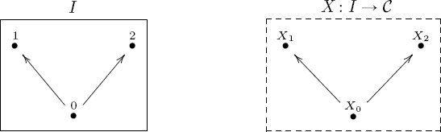
An I-shaped diagram in
An object S in the coslice category
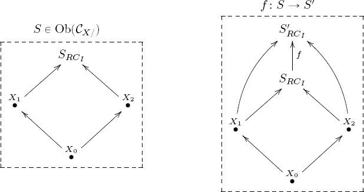
A morphism in
Exercise 6.1.3.33.
Let GrIn be the graph-indexing category (see (5.8)).
a. What is GrIn▻?
b. Let G : GrIn → Set be the graph from Example 4.3.1.2. Give an example of an object in SetG/.
Exercise 6.1.3.34.
Let
a. What is the coslice category
b. What is a colimit of X (assuming it exists)?
Solution 6.1.3.34.
a. The right cone of 0 is the terminal category 0▻ ≅ 1, and since every diagram
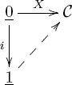
commutes, we have an isomorphism
b. A colimit of X is defined to be an initial object in
Theorem 6.1.3.35. Let I be a category and let F : I → Set be a functor. Then its colimit set colimI F ∈ Ob(Set) exists and one can find its elements as follows. An element of the set colimI F is given by choosing any i ∈ Ob(I) and any element of xi ∈ F(i), and then considering two such elements equivalent if there exists f : i → i′ such that X(f)(xi) = xi′.
Proof. See [29].
Exercise 6.1.3.36.
Let I be the category given by the following schema:
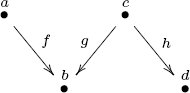
Let X : I → Set be given on objects by X(a) ≔ 2, X(b) ≔ 2, X(c) ≔ 4, X(d) = 3, and given (in sequence notation) on morphisms by X(f) = (1, 2), X(g) = (1, 2, 1), X(h) = (1, 2, 4). What is the colimit colimI X.
Remark 6.1.3.37. Definition 6.1.3.31 defined what it means to be a colimit in any category; however, in any particular category, some colimits may not exist. It is like defining the quotient of any two natural numbers r, s ∈ ℕ by r ÷ s = q if and only if
The same goes for limits. A category
Example 6.1.3.38 (Cone as colimit). It turns out that Cat is cocomplete, meaning every diagram in
Let
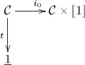
The colimit (i.e., the pushout) of this diagram in Cat slurps down the entire front pane of

The category
Example 6.1.3.39. Consider the category Top of topological spaces. The (unfilled) circle is a topological space, which people often denote by S1 (for one-dimensional sphere). Topologically, it is equivalent to an oval, as shown in Figure 6.1. The filled-in circle, also called a two-dimensional disk, is denoted D2. The inclusion of the circle into the disk, as its boundary, is continuous, so we have a morphism in Top of the form i : S1 → D2. The terminal object in Top is the one-point space ●, so there is a unique morphism t : S1 → ●.
The pushout of the diagram
Application 6.1.3.40. Consider the symmetric graph Gn consisting of a chain of n vertices,
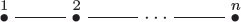
Think of this as modeling a subway line. There are n-many graph homomorphisms G1 → Gn given by the various vertices. One can create transit maps using colimits. For example, the colimit of the left-hand diagram is the symmetric graph drawn at the right:
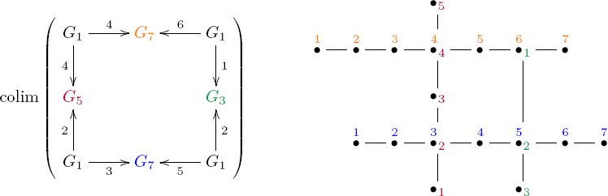
6.2 Other notions in Cat
This section discusses some additional notions about categories. Section 6.2.1 explains a kind of duality for categories, in which arrows are flipped. Reversing the order in a preorder is an example of this duality, as is the similarity between the definitions of limit and colimit. Section 6.2.2 discusses the Grothendieck construction, which in some sense makes a histogram for a set-valued functor, and shows that this idea is useful for transforming databases into the kind of format (RDF) used in scraping data off web pages. Some ways of creating new categories from old are explained in Sections 6.2.3 and 6.2.4. Finally, Section 6.2.5 shows that precisely the same arithmetic statements that held for sets (see Section 3.4.3) hold for categories.
6.2.1 Opposite categories
In the early days of category theory, and still today, people would sometimes discuss two different kinds of functors between categories: covariant functors and contravariant functors. Covariant functors are what this book calls functors. The reader may have come across the idea of contravariance when considering Exercise 5.2.3.2,9 which showed that a continuous mapping of topological spaces f : X → Y does not induce a morphism of orders on their open sets Open(X) → Open(Y); that is not required by the notion of continuity. Instead, a morphism of topological spaces f : X → Y induces a morphism of orders Open(Y) → Open(X), going backward. So we do not have a functor Top → PrO in this way, but it is quite close. It used to be said that Open is a contravariant functor Top → PrO.
As important and common as contravariance is, one finds that keeping track of which functors were covariant and which were contravariant is a big hassle. Luckily, there is a simple work-around, which simplifies everything: the notion of opposite categories.
Definition 6.2.1.1. Let
Example 6.2.1.2. If n ∈ ℕ is a natural number and n the corresponding discrete category, then nop = n. Recall the span category I = 2◅ from Definition 6.1.1.8. Its opposite is the cospan category Iop = 2▻, from Definition 6.1.1.23.
Exercise 6.2.1.3.
Let
Proposition 6.2.1.4. Let
Proof. This follows straightforwardly from the definitions.
Exercise 6.2.1.5.
If
Exercise 6.2.1.6.
In Exercises 5.2.3.2, 5.2.4.3, and 5.2.4.4 there were questions about whether a certain function
a. Does the function Open: Ob(Top) → Ob(PrO) extend to a functor Open: Topop → PrO?
b. Does the function L : Ob(J) → Ob(Prop) extend to a functor L : Jop → Prop?
c. Does the function R : Ob(J) → Ob(Set) extend to a functor R : Jop → Set?
Example 6.2.1.7 (Simplicial sets). Recall from Example 5.3.4.4 the category Δ of linear orders [n]. For example, [1] is the linear order 0 ⩽ 1, and [2] is the linear order 0 ⩽ 1 ⩽ 2. Both [1] and [2] are objects of Δ. There are 6 morphisms from [1] to [2], which could be denoted
The category Δop turns out to be quite useful in algebraic topology. It is the indexing category for a combinatorial approach to the homotopy theory of spaces. That is, we can represent something like the category of spaces and continuous maps using the functor category Fun(Δop, Set), which is called the category of simplicial sets.
This may seem very complicated compared to simplicial complexes (see Section 3.4.4.3). But simplicial sets have excellent formal properties that simplicial complexes do not. We do not go further with this here, but through the work of Dan Kan, André Joyal, Jacob Lurie, and many others, simplicial sets have allowed category theory to pierce deeply into the realm of topology, and vice versa.
6.2.2 Grothendieck construction
Let
For example, one might see something like
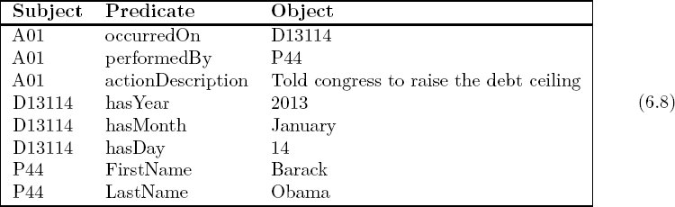
This might be an RDF interpretation of the sentence “On January 14, 2013, Barack Obama told congress to raise the debt ceiling.”
Category-theoretically, it is quite simple to convert a database instance
Definition 6.2.2.1. Let
There is a natural functor
Example 6.2.2.2. Let A be a set, and consider it as a discrete category. We saw in Exercise 5.3.3.4 that a functor S : A → Set is the same thing as an A-indexed set, as discussed in Section 3.4.6.9. We follow Definition 3.4.6.11 and, for each a ∈ A, write Sa ≔ S(a).
What is the category of elements of a functor S : A → Set? The objects of ∫A S are pairs (a, s), where a ∈ A and s ∈ S(a). Since A has nothing but identity morphisms, ∫A S has nothing but identity morphisms, i.e., it is the discrete category on a set. In fact, that set is the disjoint union
The functor πS: ∫A S→ A sends each element in Sa to the element a ∈ A.
One can see this as a kind of histogram. For example, let A = {BOS, NYC, LA, DC}, and let S : A → Set assign
Then the category of elements of S would look like the (discrete) category at the top:
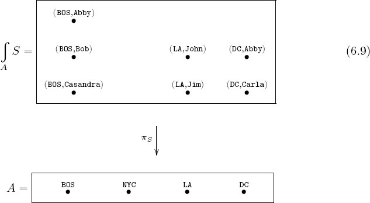
We also see that the category of elements construction has converted an A-indexed set into a relative set over A, as in Definition 3.4.6.6.
The preceding example does not show how the Grothendieck construction transforms a database instance into an RDF triple store. The reason is that the database schema was A, a discrete category that specifies no connections between data (it simply collects the data into bins). So let’s examine a more interesting database schema and instance. This is taken from Spivak [39].
Application 6.2.2.3. Consider the following schema, first encountered in Example 4.5.2.1:
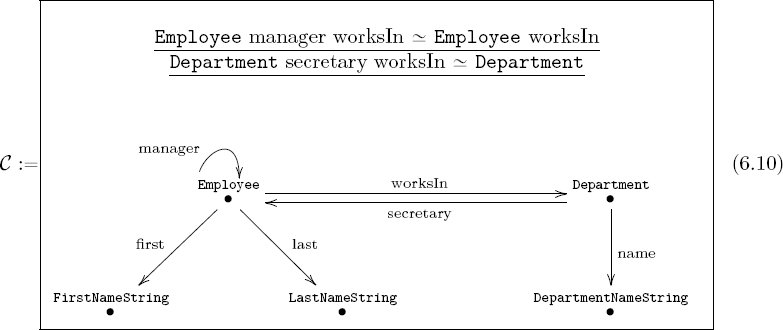
And consider the instance
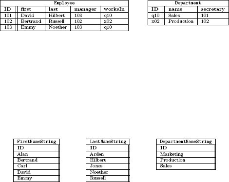
The category of elements of
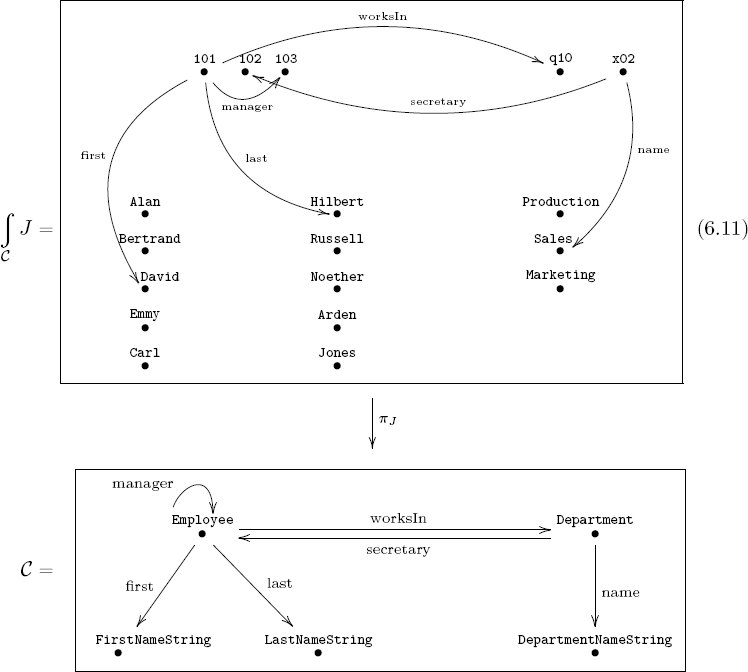
In Diagram (6.11) of
How do we see the category of elements
Employee 101 works in Department q10, which has as name Production.
Exercise 6.2.2.4.
Devise a schema
Slogan 6.2.2.5.
The Grothendieck construction takes structured, tabulated data and flattens it by throwing it all into one big space. The projection functor is then tasked with remembering which box each datum originally came from.
Exercise 6.2.2.6.
Recall from Section 4.1.2.10 that a finite state machine is a free monoid (List(Σ), [ ], ++) acting on a set X. Recall also that we can consider a monoid as a category
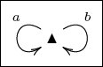
and the functor
6.2.3 Full subcategory
Definition 6.2.3.1. Let
Example 6.2.3.2. The following are examples of full subcategories. For example, the category Fin of finite sets is the full subcategory of Set spanned by the finite sets.
- If X = {s ∈ Ob(Set) | s is finite}, then Fin = SetOb=X.
- If X = {P ∈ Ob(PrO) | P is a finite linear order)}, then FLin = PrOOb=X.
- If X = {[n] ∈ FLin | n ∈ ℕ} (see Example 5.3.4.4), then Δ = FLinOb=X.
- If X = {M ∈ Ob(Mon) | M is a group}, then Grp = MonOb=X.
- If
- If X = {n ∈ Ob(Fin) | n ∈ ℕ}, then there is an equivalence of categories Fin ≃ FinOb=X.
- If X = {(V, A, src, tgt) ∈ Ob(Grph) | A = ∅}, then Set ≅ GrphOb=X.
- If
Remark 6.2.3.3. A subcategory
Example 6.2.3.4. Let
Exercise 6.2.3.5.
Recall the sets 0, 1, 2 ∈ Ob(Set) from Notation 2.1.2.21. Including all identities and all compositions, how many morphisms are there in the full subcategory SetOb={0,1,2}?
6.2.4 Comma categories
Category theory includes a highly developed and interoperable catalogue of materials (categories such as [n], GrIn, PrO, etc.) and production techniques for making new categories from old. One such was the full subcategory idea in the previous section—given any category and any subset of objects, one can form a new category to restrict attention to the subset. Another is the comma category construction.
Definition 6.2.4.1. Let
and for any two objects (a, b, f) and (a′, b′, f′) the set Hom(F↓G) ((a, b, f), (a′, b′, f′)) of morphisms (a, b, f) → (a′, b′, f′) is
In diagram form,
There is a canonical functor
A cospan
Slogan 6.2.4.2.
When two categories
Example 6.2.4.3. Let
Consider the set 1, the category Disc(1), and the functor F : Disc(1) → Set sending the unique object to the set 1. We use the cospan
Indeed, an object in (F ↓ I) is a triple (a, b, f), where a ∈ Ob(Disc(1)),
commutes. But such diagrams are in one-to-one correspondence with the diagrams defining morphisms in
Exercise 6.2.4.4.
Let
Exercise 6.2.4.5.
Let
Exercise 6.2.4.6.
Let
a. If
b. If
6.2.5 Arithmetic of categories
Section 3.4.3 summarized some of the properties of products, coproducts, and exponentials for sets, showing that they lined up precisely with familiar arithmetic properties of natural numbers. We can do the same for categories.
In the following proposition, we denote the coproduct of two categories
Proposition 6.2.5.1. The following isomorphisms exist for any small categories
Proof. These are standard results; see Mac Lane [29].
__________________
1Given R1 ⊆ X1 × X1, R2 ⊆ X2 × X2, take R1 × R2 ⊆ (X1 × X2) × (X1 × X2).
2The result is not necessarily inspiring, but at least computing it is straightforward.
3The names X × Y and π1, π2 are not mathematically important; they are pedagogically useful.
4Note that (0, 0) is not related to anything else.
5Given R1 ⊆ X1 × X1, R2 ⊆ X2 × X2, take
6The names X ⊔ Y and ı1, ı2 are not mathematically important; they are pedagogically useful.
7The indexing category I is usually assumed to be small in the sense of Remark 5.1.1.2, meaning that its collection of objects is a set.
8What is here denoted F (G) might be called the noncommutative square indexing category.